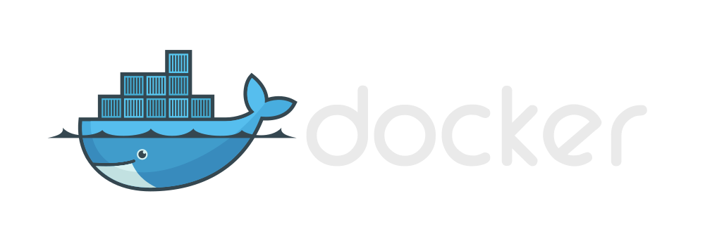
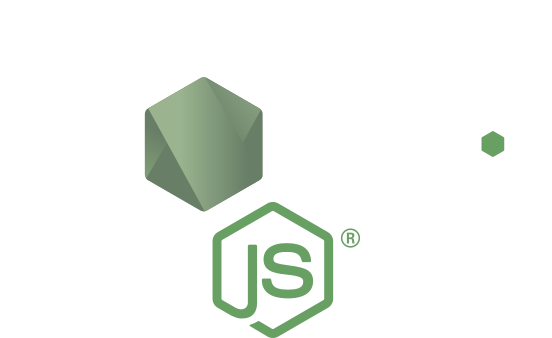
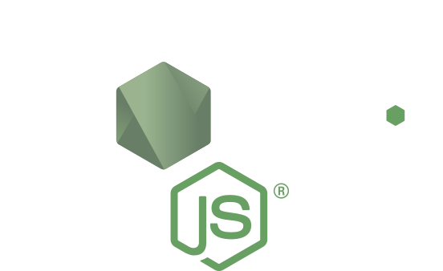
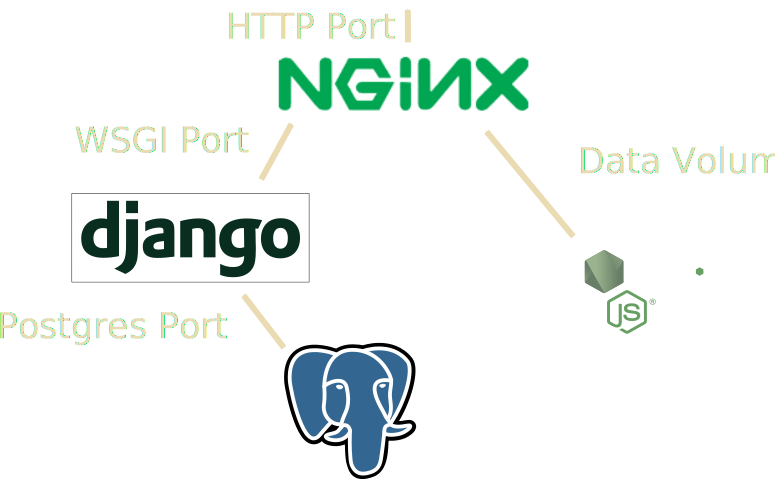

Build, Ship, Run
Docker
Agenda
- WTF is Docker?
- Dockerhub
- Multi-containers with Docker Compose
- Example setup
- Mounting volumes in development
WTF is Docker?
So, what is Docker, you may ask?
Docker is a container engine that allows you to run applications in isolated environments.
Containers are similar to VMs, but they share the kernel with the host system.
In a VM, the hardware needs to be virtualized. This adds complexity and overhead.
A container includes all libraries and binaries that are needed to run the application.
Modern linux kernels allow the docker engine to run containers in a subspace of the kernel with control groups etc.
VM vs Docker


Serving this presentation with Docker
Set up Dockerfile to run a python http server with files in srv/remark.
FROM python:3.5
RUN ["pip", "install", "sphinx", "sphinx-autobuild", "pygments"]
RUN ["pip", "install", "git+https://github.com/nyergler/hieroglyph#egg=hieroglyph"]
RUN ["mkdir", "-p", "/srv/hieroglyph"]
WORKDIR /srv/hieroglyph
EXPOSE 8001
CMD ["make", "liveslides"]
Run to build index.rst and serve result.
docker build -t hieroglyph .
docker run -it --rm --volume=$PWD:/srv/hieroglyph \
--publish=8001:8001 hieroglyph
That's nice and all, but what can I use it for?
Dockerhub holds a collection of image repositiories. Those can be used as a base for your own images.
Some popular official repositiories:


 



Multiple containers
So, let's say you are building a python web app with JavaScript frontend.
NGINX: routing, static files and load balancingNodeJS: universal server-side frontend renderingDjango+uWSGI: Running the backend/APIPostgreSQL: DatabaseMemcached: CachingRabbitMQ: Message broker
You can set up docker builds for each of those, and run them isolated from your host system.
Let's try something real
How about these containers?
nginxuWSGI+DjangoPostgreSQLNodeJS+Webpack
Container Dependencies

Connecting Containers
$ docker run --help
--link=[] Add link to another container
--volumes-from=[] Mount volumes from the specified container(s)
After building all containers with docker build -t <tag> . we can now link containers and volumes as we require.
db=$(docker run -d postgres:latest)
django=$(docker run -d -v /srv/django/static --link $db:db django-tag)
nodejs=$(docker run -d -v /srv/react/dist nodejs-tag)
nginx=$(docker run -d \
--link $django:django --volumes-from $django \
--volumes-from nodejs nginx-tag)
But ugh... that's a lot of commands just to get the application running.
Docker Compose to the rescue!
Docker compose let's you define a multi container app in a single file.
This allows you to run the full application using a single command.

Corresponding compose file
django:
build: ./django
volumes:
- /srv/django/static
links:
- db:db
nginx:
build: ./nginx
ports:
- "8080:80"
links:
- django:django
volumes_from:
- django
- react
react:
build: ./react
volumes:
- /srv/react/dist
db:
image: postgres
Django setup
Install the default django project
mkdir -p django/src && cd $_
django-admin startproject project . && cd -
Structure:
.
└── django
├── Dockerfile
├── requirements.txt
└── src
├── manage.py
├── project
│ ├── ...
│ └── wsgi.py
├── requirements.txt
└── uwsgi.ini
Python dependencies
The app will run as user django inside a virtualenv:
# django/requirements.txt
virtualenv==14.0.6
Dependencies for a basic Django REST Framework app using PostgreSQL and uWSGI.
# django/src/requirements.txt
Django==1.9.6
uWSGI==2.0.12
psycopg2
djangorestframework==3.3.3
uWSGI
uWSGI settings for running in virtualenv as the user django:
# django/src/uwsgi.ini
[uwsgi]
chdir = /srv/django
module = project.wsgi
home = /srv/django/.env
master = true
processes = 10
enable-threads = true
socket = :8000
logfile = /srv/django/uwsgi.log
vacuum = true
touch-reload = /srv/django/uwsgi.ini
Dockerizing Django
1 2 3 4 5 6 7 8 9 10 11 12 13 14 15 16 17 18 19 20 21 22 23 24 25 26 27 28 29 30 | # django/Dockerfile
FROM python:3.5
COPY entrypoint /usr/local/bin/entrypoint
RUN mkdir -p /usr/src/app
COPY requirements.txt /usr/src/app/
RUN pip install --no-cache-dir -r /usr/src/app/requirements.txt
# Create django user, will own the Django app
RUN useradd -s /bin/bash --uid 1000 --home-dir /srv/django django
# Add code
COPY ./src /srv/django
WORKDIR /srv/django
RUN chown -R django:django .
USER django
RUN /bin/bash -c "virtualenv /srv/django/.env \
&& source /srv/django/.env/bin/activate \
&& pip install -r /srv/django/requirements.txt"
EXPOSE 8000
RUN mkdir static
RUN mkdir dbdata
ENTRYPOINT ["/usr/local/bin/entrypoint"]
# Execute start script
CMD ["uwsgi", "/srv/django/uwsgi.ini"]
|
Entrypoint
The CMD command from the Dockerfile will be passed as arguments to entrypoint, which is the bash-script below.
The same applies if a command is supplied to docker run.
It creates the virtualenv if it doesn't already exist, activates it, then applies database migrations and collects static files.
#!/usr/bin/env bash
COMMAND=$@
if [ ! -d ".env" ]; then
virtualenv .env
fi
source .env/bin/activate
./manage.py migrate
./manage.py collectstatic --no-input
$COMMAND
Nginx
upstream django {
server django:8000;
}
server {
listen 80 default_server;
server_name example.com;
charset utf-8;
location /static/ { # STATIC_URL
alias /srv/django/static/; # STATIC_ROOT
expires 30d;
}
location / {
include uwsgi_params;
uwsgi_pass django;
}
}
Nginx Dockerfile
This docker build will copy site.conf to default.conf.
The base image already has a CMD that will start Nginx.
# nginx/Dockerfile
FROM nginx:stable
COPY ./config/site.conf /etc/nginx/conf.d/default.conf
The compose file
Let's connect them using docker-compose:
django:
build: ./django
volumes:
- /srv/django/static
- /srv/django/dbdata
nginx:
build: ./nginx
ports:
- "8080:80"
links:
- django:django
volumes_from:
- django
Starting it up
To run this, simple execute
docker-compose build
docker-compose up
Nice, it's running!
$ docker-compose ps
Name Command State Ports
-----------------------------------------------------------------------------------------------------
uwsginginx_django_1 /usr/local/bin/entrypoint ... Up 8000/tcp
uwsginginx_nginx_1 nginx -g daemon off; Up 443/tcp, 0.0.0.0:8080->80/tcp
Well, that wasn't too crazy. But wait... We forgot PostgreSQL and we are using SQLite as database backend. :(
Adding postgres
Removing dbdata and adding a link between the django and db containers.
--- ../code/uwsgi-nginx/docker-compose.yml
+++ ../code/postgres/docker-compose.yml
@@ -2,7 +2,8 @@
build: ./django
volumes:
- /srv/django/static
- - /srv/django/dbdata
+ links:
+ - db:db
nginx:
build: ./nginx
@@ -12,3 +13,6 @@
- django:django
volumes_from:
- django
+
+db:
+ image: postgres
Update Django settings
Swap out the database settings.
--- ../code/uwsgi-nginx/django/src/project/settings.py
+++ ../code/postgres/django/src/project/settings.py
@@ -79,8 +79,11 @@
DATABASES = {
'default': {
- 'ENGINE': 'django.db.backends.sqlite3',
- 'NAME': os.path.join(BASE_DIR, 'dbdata', 'db.sqlite3'),
+ 'ENGINE': 'django.db.backends.postgresql_psycopg2',
+ 'NAME': 'postgres',
+ 'USER': 'postgres',
+ 'HOST': 'db',
+ 'PORT': 5432,
}
}
Build and run!
To start it, we first need to run the database migrations against the db container.
docker-compose build
docker-compose run django ./bootstrap-dev
docker-compose up
JavaScript frontend
We use a React with Redux to manage application state. We use Webpack via NodeJS API to build a bundle from index.jsx and output into dist.
.
├── app
│ ├── actions [d]
│ ├── components [d]
│ ├── containers [d]
│ ├── reducers [d]
│ ├── store [d]
│ ├── styles [d]
│ ├── index.html
│ └── index.jsx
├── dist [d]
├── package.json
├── server.js
└── webpack.config.js
Webpack config
Webpack will bundle our ES6 code into a single bundle using babel.
We use webpack dev server to serve the app and proxy requests to the REST API during development.
var webpack = require("webpack");
var HtmlWebpackPlugin = require('html-webpack-plugin');
var combineLoaders = require('webpack-combine-loaders')
var path = require('path');
var webpackConfig = {
entry: {
bundle: [
'webpack-dev-server/client?http://localhost:8000',
'webpack/hot/only-dev-server',
'babel-polyfill',
'./app/index.jsx'
]
},
output: {
path: path.resolve(__dirname, 'dist'),
filename: 'js/[name].[hash].js',
publicPath: '/'
A bunch of JS packages
How an 11 line code dependency manages to break everything
"dependencies": {
"isomorphic-fetch": "^2.2.1",
"react": "^15.0.2",
"react-dom": "^15.0.2",
"react-redux": "^4.4.5",
"react-router": "^2.4.0",
"react-router-redux": "^4.0.4",
"redux": "^3.5.2",
"redux-form": "^5.2.3",
"redux-logger": "^2.6.1",
"redux-thunk": "^2.1.0"
},
"devDependencies": {
"babel-core": "^6.8.0",
"babel-loader": "^6.2.4",
"babel-plugin-transform-object-rest-spread": "^6.8.0",
"babel-polyfill": "^6.8.0",
"babel-preset-es2015": "^6.6.0",
"babel-preset-react": "^6.5.0",
"css-loader": "^0.23.1",
"html-webpack-plugin": "^2.16.1",
"node-sass": "^3.7.0",
"react-hot-loader": "^1.3.0",
"redux-devtools": "^3.3.1",
"redux-devtools-dock-monitor": "^1.1.1",
"redux-devtools-log-monitor": "^1.0.11",
"sass-loader": "^3.2.0",
"style-loader": "^0.13.1",
"webpack": "^1.13.0",
"webpack-combine-loaders": "^2.0.0",
"webpack-dev-server": "^1.14.1"
}
The Dockerfile
FROM node:4
RUN npm install -g webpack
RUN useradd -s /bin/bash --uid 1000 --home-dir /srv/react react
COPY src /srv/react
WORKDIR /srv/react
RUN mkdir dist
RUN chown -R react:react .
USER react
RUN npm install
CMD [ "webpack"]
The compose file
Let's add the react to docker-compose.yml and add a link for the data volume.
--- ../code/postgres/docker-compose.yml
+++ ../code/nodejs/docker-compose.yml
@@ -13,6 +13,12 @@
- django:django
volumes_from:
- django
+ - react
+
+react:
+ build: ./react
+ volumes:
+ - /srv/react/dist
db:
image: postgres
Nginx config update
Let nginx handle routing and static files. It's pretty good at that!
--- ../code/postgres/nginx/config/site.conf
+++ ../code/nodejs/nginx/config/site.conf
@@ -10,9 +10,17 @@
alias /srv/django/static/; # STATIC_ROOT
expires 30d;
}
- location / {
+ location ~ ^/(api|api-token-auth|admin)(/?|/.*)$ {
include uwsgi_params;
uwsgi_pass django;
}
+ location ~* ^/(js|css)/.*$ {
+ alias /srv/react/dist/; # REACT_ROOT
+ try_files $uri =404;
+ }
+ location / {
+ alias /srv/react/dist/; # REACT_ROOT
+ try_files $uri /index.html;
+ }
}
You know this step by now!
Let's fire it up:
docker-compose build
docker-compose run django ./bootstrap-dev
docker-compose up
We're up and running. The react container exited early since it just had a build step.
$ docker-compose ps
Name Command State Ports
-----------------------------------------------------------------------------------------
nodejs_db_1 /docker-entrypoint.sh postgres Up 5432/tcp
nodejs_django_1 /usr/local/bin/entrypoint ... Up 8000/tcp
nodejs_nginx_1 nginx -g daemon off; Up 443/tcp, 0.0.0.0:8080->80/tcp
nodejs_react_1 webpack Exit 0
Making it dev-friendly
Expose webpack-dev-server from the react container. We don't want to build containers everytime we change the code. Let's mount some volumes!
django:
build: ./django
volumes:
- ./django/src:/srv/django
links:
- db:db
nginx:
build: ./nginx
links:
- django:django
volumes_from:
- django
react:
build: ./react
command: [npm, start]
volumes:
- ./react/src:/srv/react
ports:
- "8000:8000"
links:
- nginx:nginx
db:
image: postgres
Build, Run, Have fun
The usual stuff, but we also need to install node and python packages in the mounted volumes.
docker-compose -f docker-compose.dev.yml build
docker-compose -f docker-compose.dev.yml run django ./bootstrap-dev
docker-compose -f docker-compose.dev.yml run react npm install
docker-compose -f docker-compose.dev.yml up
Docker Machine
Provisioning can be automated with Docker Machine.

It can be used to set up Docker in a local VM or on cloud providers. It can configure your local Docker client to transparently talk to remote Docker Engines.
Cross platform support
If you are on a non-linux system, you can run the docker daemon in a VM using docker-machine. Provision a local VM with
docker-machine create
This will create a VM with the name default. To make docker talk to the new machine, we need to set some ENV-variables
$ docker-machine env default
export DOCKER_TLS_VERIFY="1"
export DOCKER_HOST="tcp://172.16.62.130:2376"
export DOCKER_CERT_PATH="/Users/<yourusername>/.docker/machine/machines/default"
export DOCKER_MACHINE_NAME="default"
# Run this command to configure your shell:
# eval "$(docker-machine env default)"
Don't worry, Docker for Windows and OS X is in beta!
Provision hosts on cloud providers
Docker Machine can also be used to provision hosts on the cloud, e.g. AWS:
docker-machine create --driver amazonec2 \
--amazonec2-access-key AKI******* --amazonec2-secret-key 8T93C******* \
aws-sandbox
Some other drivers include:
- Microsoft Azure
- Digital Ocean
- Google Compute Engine
- OpenStack
You can also create machines on existing VMs/hosts with the generic driver
docker-machine create --driver generic --generic-ip-address=<ip> \
--generic-ssh-key=$HOME/.ssh/id_rsa <name>
Docker Swarm
Docker Swarm provides native clustering for Docker. It turns multiple hosts into a single virtual Docker host.

It serves the standard Docker API, so you can still use tools like docker-compose and scale up to thousands of nodes.
Recap
- Docker Engine to manage single containers
- Docker Compose for multi-container applications
- Docker Machine to manage remote Docker hosts
- Docker Swarm to turn a pool of Docker hosts into a single virtual host
Thank you!
Questions?